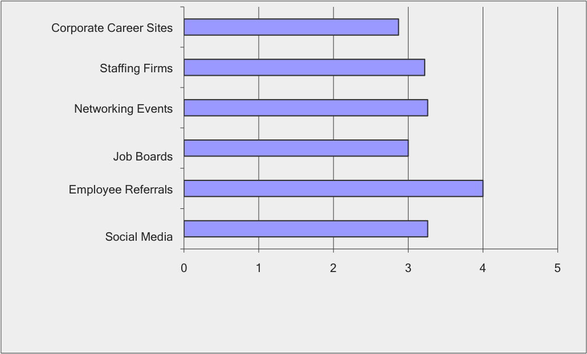
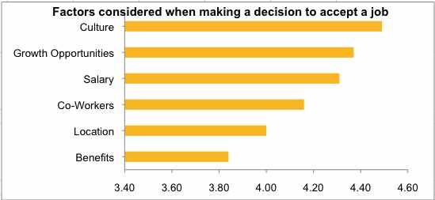
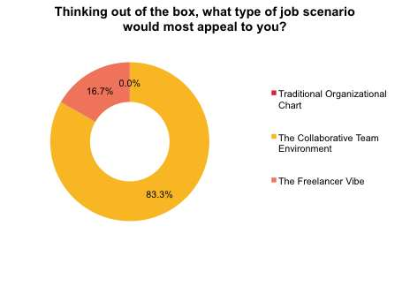
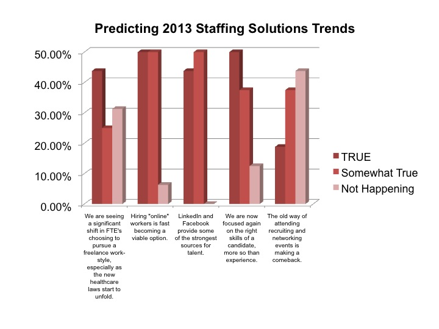

Survey - archive
Be heard
Pontoon values data, opinions and interesting perspectives. We want to hear yours. Our surveys are designed to provoke thought, challenge conventions and collect insights that may steer our service offering—and the industry—so be heard.
Results from Q1 2014 Survey: Given that finding top talent is achieved by a cohesive recruiting strategy, how should top talent be pursued for higher return on investment?
A majority of survey respondents said Employee referral is critical for pursuing top talent. Networking Events, Social Media and Staffing Firms were also ranked very important to important aspects of recruiting stratgey by respondents.
Results from Q4 Survey: What are the most important factors that you would consider when making a decision to accept a position that is offered to you?
In our Q4 survey, Culture, Growth opportunities, and Salary emerged as the top 3 factors considered by respondents when making a decision to accept a new position.
Results from Q3 Survey: Thinking out of the box, what type of job scenario would most appeal to you?

A majority eighty-three percent (83%) of respondents prefer a "Collaborative Team Environment" scenario which offers a less-structured, open/shared workspace, with lateral decision making teams, fostering creative output, shared responsibilities and team wins. Seventeen percent (17%) prefer "The Freelancer Vibe," that is project-based with a flexible work schedule requiring personal work discipline to manage workload and deadlines, opportunities to adjust compensation, and yet not a traditionally structured salary and benefits package. "Traditional Organizational Chart" scenario did not appeal to anyone from our Survey.
Results from Q2 Survey: 2013 Predictions Coming True?
According to survey results, the web continues to influence hiring trends in the industry, with most respondents finding that LinkedIn and Facebook provide some of the strongest sources for talent; and hiring workers in a remote location is growing as a possible alternative. We are starting to see the potential effects of new healthcare laws changing the landscape from traditional full-time employees to a freelance style; and focus on actual candidate skills is outweighing experience when it comes to hiring decisions. It is important to note that with the many options that the web and social media offer for recruiting, the appeal of recruiting and networking events may be seeing a decline according to respondents.
Results from Q1 Survey: 2013 Goals and Objectives
For the Q1 survey, users rank ordered solution attributes from most important (1) to least important (8). Based on user responses, the solutions attribute determined most important was Analytics, followed by Cost savings, Process efficiencies, Automation, Improved talent quality, Risk Mitigation, Visibility, and Supply Base Management.